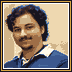

Hussain
Alshikhy
Full-Stack Web Developer
UI/UX Designer
OPEN TO WORK
01About
I'm a fourth-year Software Engineering student at Libyan International Medical University and a working web developer. My day job is building and maintaining web applications at Grids Company — right now, the complete web system for Emaar.
Front end is where I spend most of my time: structure, layout, responsiveness, and the small interaction details that make an interface feel finished. I design the interfaces too, so I'm not handing specs across a wall — I go from wireframe in Figma to the deployed page.
Before Grids I worked remotely with Texs Studio, contributing front-end work and UI/UX design to products delivered to 30+ clients. I also test games and preview builds through the Xbox Insider Program, which is where a lot of my instinct for usability bugs comes from.